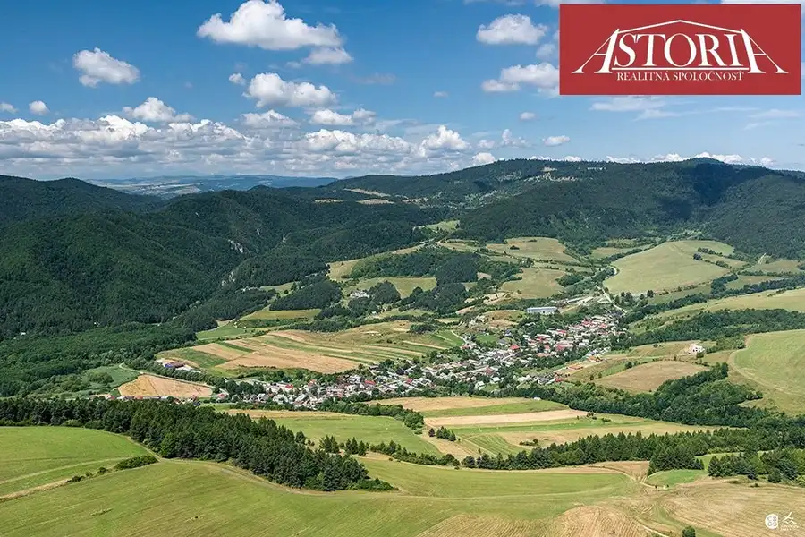
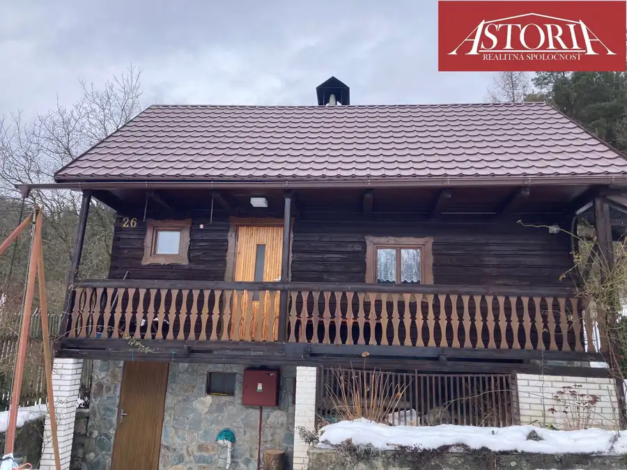
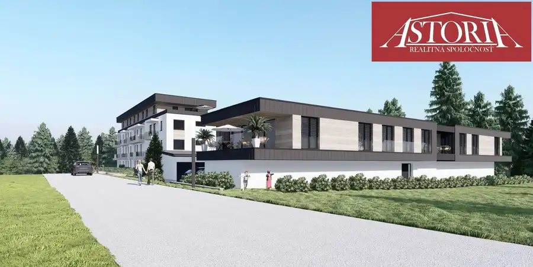
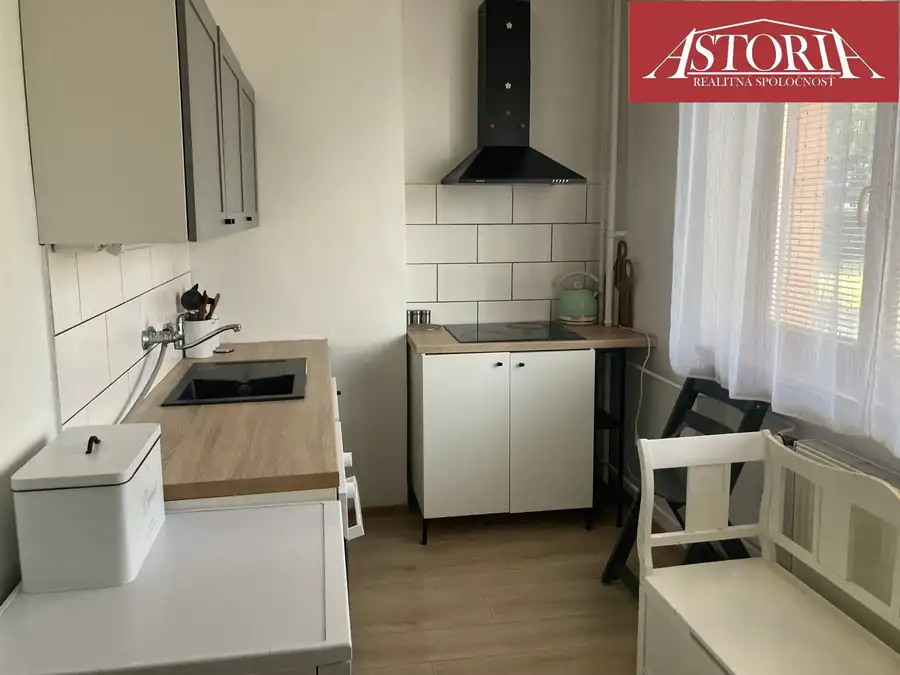

Rekreačný pozemok na predaj Turčianske Kľačany
Turčianske Kľačany

- Plocha3146 m²
O nehnuteľnosti
Ponúkame Vám na predaj pozemok v Martine, obec Turčianske Kľačany. Rozloha pozemku činí 3 146 m2 a šírka cca 17m. Nachádza sa v blízkosti intravilánu obce, cez pozemok vedie vodovodná prípojka do neďalekej chaty, v blízkosti pozemku vedie vedenie vysokého napätia. Pozemok sa predáva v celku.Druh pozemku: 1316 Trvalý trávny porast, 1830 Ostatná plocha.K pozemku vedie obecná prístupová nespevnená cesta. V blízkosti sa nachádzajú dve chaty so súpisným číslom. Je vhodný na rekreačný účel ale aj ako investícia. Fotka je ilustračná. Cena: 71 500 eurCena zahŕňa: bezplatná ponuka financovania, kompletný právny servis a poradenstvo, vypracovanie návrhu na vklad do katastra, garanciu bezpečného prevodu nehnuteľnosti a kúpnej ceny. Realitná kancelárie ASTORIA, s.r.o., M.R. Štefánika 10, Martin. KONTAKT: Dalibor Holko, tel:0911 646 619 mail: holko@astoria.sk
Parametre
- Druh
- Rekreačný pozemok
- Dátum zverejnenia
- 02. 06. 2026
- Dĺžka pozemku
- 199
- Elektrina
- Pri pozemku - 400 V
- Funkčné využitie
- Výstavba chaty
- Odpadové vody
- Nedostupné
- Plocha pozemku
- 3146 m²
- Plyn
- Nedostupné
- Pripravenosť k výstavbe
- Schválené v územnom pláne
- Terén pozemku
- Mierne svahovitý
- Typ
- Predaj
- Voda
- Pri pozemku - Verejný vodovod
- Šírka pozemku
- 17
Kde to je


Mohlo by Vás zaujímať

Chata, drevenica, zrubNové 83 000 €Rekreačná chata s veľkým pozemkom na predaj Brieštie Brieštie 82 m²
BytNové 243 500 €2 izbový byt na predaj novostavba Martin - Bystrička Martin 2-izbový76.4 m²2. podlažie
BytNové 110 000 €2.izbový byt na predaj Turany Turany 2-izbový58 m²1. podlažie